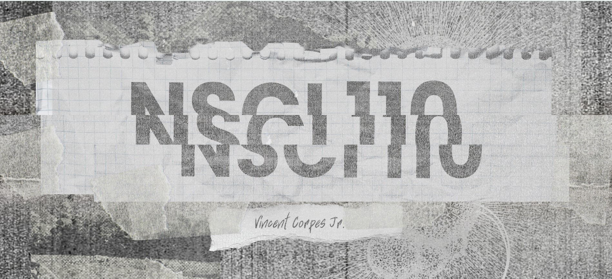

NSCI 110 website
This website aims to build a centralized platform for BSCS 1-A students to compile their learnings and reflections in NSCI 110 course.
More
This website aims to build a centralized platform for BSCS 1-A students to compile their learnings and reflections in NSCI 110 course.
The BSCS 1A students took an interdisciplinary course, Science, Technology, and Society (STS), in their second semester, which enhanced their critical thinking skills by studying the relationship between scientific advancements, technological innovations, and societal impacts.
Instead of a final exam, the students created a website as a collaborative project, leveraging the web development skills they learned throughout the semester.
The website, developed from March to May, serves as a platform to share the knowledge and understanding gained from the STS course. It includes individual student profiles and a resources section with presentations, PDFs, and other supplementary materials.
The students express their gratitude to their instructor, John Philip Bolivar, for his guidance and insightful instruction throughout the course. His dedication enriched their learning experience and fostered critical thinking within the STS field.
The project is a collective effort of the BSCS 1A batch of A.Y. 2023-2024, and they hope that future STS students will find the curated content and shared experiences on the website valuable and thought-provoking.

"The website has two tabs: Favorite Lessons and Reflections. Favorite Lessons contains three of my favorite lessons, as well as why I like them. Reflections contains my reflections. Summary of my reflections: As understand more of science, the bodies of knowledge continuously expand and develop. There will always be opposition towards new knowledge. Scientific innovation is a key to lessening out environmental impact. A society is influenced by how it values science and what knowledge it pursues."

AI and GMOs opened my eyes in the future and what living on it might be like. I'm obliged to prove to people that GMOs are still safe to use and it will be one of our tools that will solve global world hunger and will provide more food for people that are existing and will be exist in the future.

My website is an accumulation the things I learned as the lessons progress

Embark on an journey of discovery and learning through an interactive game that showcases my reflections and insights in the Science, Technology, and Society subject.

This websites main goal is to showcase all the insights and lessons that I have gathered all throughout the NSCI curriculum. I hope it allows you to further your understanding of the lessons we discussed and my mindset in tackling the different topics that we discussed.

To learn with purpose of the subject NSCI; reflecting on what I've learned, the lessons that comes from it, and things to ponder about.

Creating dialogue between characters in a science-focused STS project offers a dynamic way to explore the intricate relationship between technology and society, emphasizing ethical considerations and the importance of responsible innovation within a gamified framework.

My website explores STS, examining history, philosophy, contemporary topics, and Filipino inventors, emphasizing critical thinking and the "good life" role of technology in society.

Scrolling Through Change: A Reflection on Science, Technology, and Society. Join me on a journey through the ever-evolving landscape of science, technology, and society (STS). Let's explore these interconnected forces shaping our world, all through the lens of a curious learner.

I learned a lot about science, technology, and society. Specifically, how they work together:>

This website introduces my reflections and opinions, as well as a summarized explanation per topic regarding the lessons.

This website serves as my personal journey through the concepts and discoveries of the topics in NSCI.

Our journey through the STS course has been enlightening. We’ve gained a deeper understanding of the interplay between science, technology, and society, and I'm excited to apply these insights in my future endeavors.

Lakbay, a journey into my lenses in Science, Technology, and Society

NSCI 110 taught me a lot about how science, tech, and society are all connected. We learned about ethics, environmental issues, and the power we have to make a difference. I'm grateful for what I've learned and ready to use it to make the world better.


Collection of thought-provoking reflections, analyses, and learnings from our exploration of the intricate relationships between science, technology, and society.
In my website, I thoroughly exemplified all of the intricacies of science in making the world a better place to live.

The website holds my journey throughout the NSCI discussions we had. It contains my learnings, reflections, and memories to every topics ever discussed.

Explore reflections, discussions, and insights on Science, Technology, and Society.

We looked at the intersections of science, technology, and society in NSCI 110, taking into account the effects on society, ethical challenges, and global issues.

Reflections on the relationship between science and religion.

live, laugh, love, NSCI
In my website, I thoroughly exemplified all of the intricacies of science in making the world a better place to live.

This website contains some opinions, reflections, and learnings that I acquired during the discussion of these topics.

A summary of my learnings of Unit 1, 2, and 3

A deep dive into a computer science student's thoughts about science.

This website is a reflection of my journey through the fascinating world of Science, Technology, and Society, sharing insights and discoveries along the way.

Get ready for an explosive suprise.
I learned how science and technology affected and impacted our society.

Discover my insightful reflections, learnings and key takeaways on Science, Technology, and Society in this blog. Let's dive into a variety of topics exploring the intricate relationship between scientific advancements, technological innovation, and societal impacts. From ethical dilemmas to cultural shifts, this blog offers a unique perspective on how these domains intersect and shape our world.

The website I created shows my comprehensive understanding of the various topics under the 4 units of the NSCI 110 this semester.

di rin ako sure hehe

This reflection explores what I have learned, examining key insights, personal growth, and the broader implications of NSCI 110.